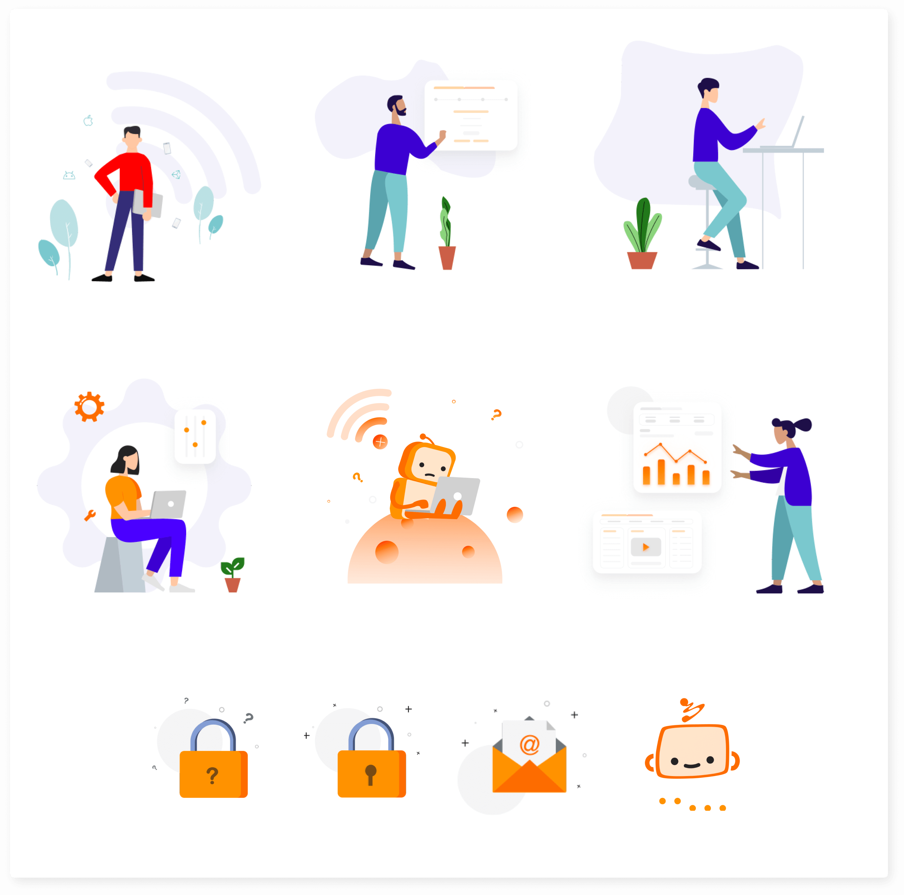
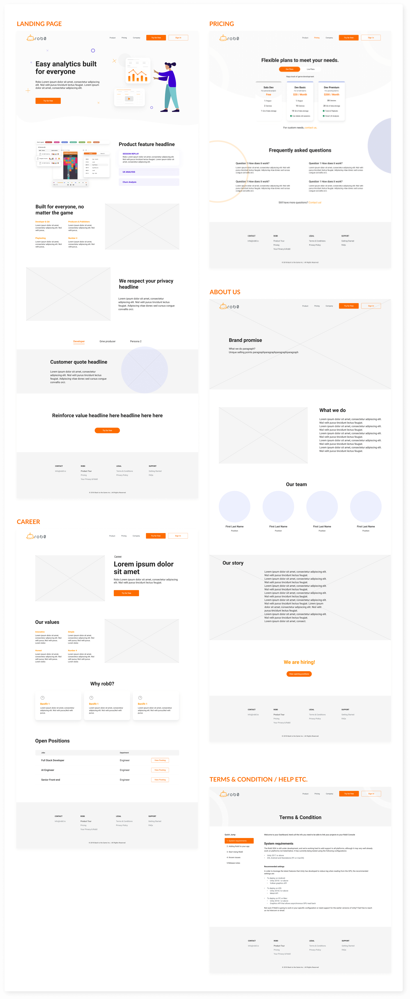

rob0
rob0 is an AI powered visual analytics tool for PC, VR and mobile game development. Instead of complicated graphs, It analyzes everything for you, and letd you knpe exactly when and why players leave your game.
Roles: Research, Information Architecture, UX/UI Design, Prototype
Tools: Figma, Jira
Duration:: Aug - Nov 2020
My role
As the first and sole UX/UI designer, I’ve been working on every single design front including the web, their B2B game analytics tool, the branding and the design system.
Below case study focuses on how I successfully solved the key usability issues and designed the whole SaaS tool within a tight deadline.
Process

Challenges
Game analytics tools tend to have a deep learning curve since they are data-oriented. rob0 is a SaaS tool that don’t require math skill. Potential clients loved the idea of the project, but without a UX designer made the product very hard to use. Clients didn’t know how to use the product without constantly asking help from rob0. Everyone wasted a lot of time. In order to acquire more clients, rob0 needed to overcome below challenges:

The solution
I’ve used all the insights from research to design the SaaS tool from ground up. With the new product, users can efficiently view, document, share video sessions, and improve communications during every stage of a gaming developing process. Users can have insights from real players to improve their conversion from day 1. Inside are: handy navigations, helpful directions, intuitive and dynamic layout for you to easily get started with the product.
Outcome
The new product received positive feedback from everyone.
- After rob0 was released, OnMobile (rob’s investor) decided to acquire rob0.
- The completion rate of setup process went from 0% to 100%.
- 100% of people that our marketer reached out were strongly interested in the product.
RESEARCH
I started off by talking to my boss and other stakeholders to understand what the product is, how to use it, the business goals etc. Then I did a heuristic analysis of the old product and found it extremely confusing and hard to navigate.
Interviews
Apparently I wasn’t the only one, after getting feedback from our clients, I learned about their experiences. I then created below personas with their painpoints.

Market research
Before this project, I had very little knowledge about gaming industry in general. Even after knowing about the painpoints of our customers, I had no idea how to solve the problems. So make sure I knew what I was getting into, and how I could improve their experience. I read bunch of articles to learn about game analytics and user behavior analytics tools. Through this quick research method, I learned about what features are common for these tools and potentially how rob0 could be improved.

Define + Ideate
After research, we were tasked to launch rob0 with full billing ability in less than 4 months. With such a tight deadline, knowing how to prioritize became imperative. I had meetings with my boss and colleagues at least once a week to brainstorm and make sure everyone’s synced. Thanks to the research I did, I was able to confidently suggesting features and changes. Finally taking into account of everyone’s needs and limitations, we decided to focus on redesigning the information architecture, adding MVP (Minimum viable product) and improve efficiency. Below are the core functionalities: (red are the ones we didn’t add)

Information Architecture
Knowing what problems and potential features we wanted for rob0.
During the design process, with a few iterations, I created below sitemap to show the layout.
Basically, the whole product will be divided into projects and organizations.
Projects - Each single project consists dev log, live users, project info. Dev log consists recordings of developing devices. Live users consists of recordings and statistics, graphs of real users. Project Info consists all info about a project such as member list, project plan etc.
Organizations - Organization consists information such as projects, member list, billing information.

CHALLENGE 1
How might we communicate the setup process?
Before:
With the old product, users had no idea what they needed to do without getting help from rob0 staff.
For example, to start using rob0, they needed to read a long help guide (#1) on the website, the guide tells them to create a project and complete the description first, but didn’t tell them where to create the project, and there was no place to add description. Plus when looking at #2 project settings: this page actually contained both project and organization information. Even me I had no idea where this organization came from, and what certain CTA meant, such as “unlink”. It was almost impossible for our users to complete the setup process without getting help from robo.

After:
Keeping the first-time user experience in mind, I started with onboarding flow. After learning about the setup process, I started to brainstorm how I would show to users. I experimented different ways of walking users through the onboarding flow: persona-based onboarding, interactive tour, video, check list, step-by-step guided tour...
Onboarding
After research, we were tasked to launch rob0 with full billing ability in less than 4 months. With such a tight deadline, knowing how to prioritize became imperative. I had meetings with my boss and colleagues at least once a week to brainstorm and make sure everyone’s synced. Thanks to the research I did, I was able to confidently suggesting features and changes. Finally taking into account of everyone’s needs and limitations, we decided to focus on redesigning the information architecture, adding MVP (Minimum viable product) and improve efficiency. Below are the core functionalities: (red are the ones we didn’t add)

I settled down with “step-by-step guided tour”, because:
- Users cannot use the product without completing certain steps.
- The step-by-step guided process motivates users to go forward, it gives users a sense of completion.
- Onboarding now is divided into few steps which greatly reduces users’ cognitive load.
- It is quick since users don’t need to make any choice or input their billing info at this moment.
With the new product, users can easily get started with rob0 by themselves.The completion rate went from 0-100% for setup process.
User flow
To make sure the experience is consistent, whenever users needs to add a new project, they will have a similar experience, but will have some extra steps (such as steps indicated in organge). To increase efficiency for power users, some content will also be folded by default to minimize scrolling, but users can always expand to view details if they need.

CHALLENGE 2
How might we help users to find & view recordings efficiently?
Before:
“Device view” screen shows the recorded session for just one device during a single day. There are more than 30 sessions. Imagine just 10 devices with a playtest that last 3 days. boom, 900 sessions right there. With the old product, it was vey time consuming to find useful recordings. Plus the space on the right side is totally wasted when no video is selected.

After:
After checking bunch of inspirations from other indirect and direct competitors, it seems to be very common to have a list view of all session recordings. To leverage our users familiarity with current design patterns. I also decided to include a list view. It was unclear what information should be added. Based on research and user interviews, for MVP, we finally decided to add key info such as date, time, # of notes, session preview, length of the session. Just this simple info will save users a lot of time when deciding which videos to watch.

Session Replay
To see the progress of the game, users needed to quickly toggle between sessions while watching recordings without switching pages. I spent some time trying to figure out how to show it without clutter the screen. Finally after exploring some options, I decided to break information into 3 sections (Left: device/sessions; Middle:Video; Right: Info, activities, notes.) and have a dynamic layout with icons for users to hide and show sections as needed.

View session replays at your fingertips
Inside of this session replay page are carefully thought features that will increase the simplicity and efficiency of use in every way possible.

CHALLENGE 3
How might we inform users about their projects /plan status?
Live User
“Live Users” feature allows our users to learn from their players after the game goes live. Clients were especially interested in this feature. With the old product, they didn’t know how to use it, had no way of accessing plan quota, status etc.
Keeping users’ goals and frustrations in mind, I started to design. Below are some of the design details.

OTHER DESIGNS
Project & Organization Information
The old product was very naive, it didn’t really have project information, nor organization information. For a B2B product, it is important for users to manage their projects & organizations. The most challenging part of this was role permission design and constraints. For example, users are not allowed to delete themselves if there’s only one owner for a project, they can only transfer a paid project, etc. How do we convey these constraints / rules clearly to users without overwhelming them? To make sure these constraints were well designed, I had close communication with our back-end all the time.
Below are some of design details.

Design System
While I was designing, I also created design system to help making sure the product will look as consistent as possible, The organized design system helped developers tremendously, and saved me a lot of time during explaining and handoff process.

Illustrations
I also helped them to create certain illustrations to improve the visual of the product.
Website Mid-Fidelity wireframes
I mostly focused on the b2b product. But in my spare time, I also helped to redesign the old website. It went from a single web page to an informative website that consists “landing page, pricing, company, jobs etc”. The mid-fidelity wireframes focused on showing the layout.
REFLECTION
As a sole designer + First time working on an enterprise software + without much knowledge in AI game analytics itself, it was certainly scary at the beginning. After researching, talking to users and constantly bugging my colleagues to understand how the product works, I’m glad my design hit the bar.